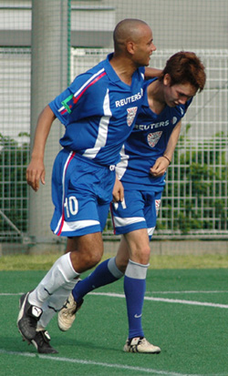
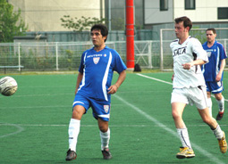
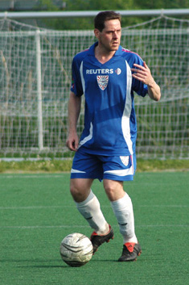
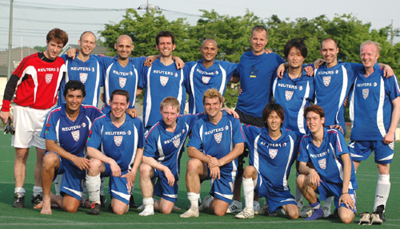

|
Hachioji Park, Saturday 5th May,
The great Sam Cooke once sang:
"There've been times that I've thought I couldn't last for long
But now I think I'm able to carry on
It's been a long time coming
But I know a change is gonna come…”
 A change has come for BFC and it’s been a long time coming indeed, more than a decade according to some scholars, but BFC have won the league, not that TML has been running for a decade, but BFC outdates TML by a fair few years…
BFC needed only a point to secure the championship, but were out for all three against Sala, who still had an outside chance of finishing the league second and regardless would be well up for this fixture. There was a cool calm about the squad before kick off, but the bottom line was everyone knew there was a job that needed to be done.
Early forays by Sala in the first 15-minutes, particularly by striker Dhughal, into the BFC box causing keeper Jason to decisively charge off his line to parry the threat and Toby twisting and turning his way into the box only to pull his shot wide, were enough to awaken the BFC machine. From thereon BFC found their composure at the back, hitting the feet of midfield maestros Carlos and Ivo and sending Jon and Alex Sahara on a few jaunts of their own.
Shosuke, playing unusually deep at the start began to pick up the ball on the halfway line and moved the ball, glued to his boots, down the flanks, riding the challenges he could and being clattered at times as per usual and generally making a nuisance of himself - his pace and skills still, thankfully remaining unmatched, during this game (and indeed the league) and his body, more thankfully, remaining intact after 80-minutes despite the malice/frustration shown towards him at times and not always by some…
“Keep the ball!” was the mantra being recited by Carlos, whose cool control and composure had a wonderfully soothing, yet energizing effect on the team. He puts his foot on the ball, lays off 10-yard passes or, at times, pings a 40-yard ball to the feet of his wingers like Paul Wadsworth, who 20-minutes into this game latched on to one of these passes and without thinking launched a rocket from fully 25-yards that was still accelerating as it narrowly missed the inside of the right upright and fizzed into the back of the net – the ball not having risen more than a centimeter off the deck. 1-0 and what a way to kick things off.
Moments later and it was young Alex Sahara, whose pace and positional sense had already caused the Sala back line a few nervous moments, whose turn it was to shine - and again it was Carlos who picked him out from range. Carlos sent Alex after a 40-yard ball that even had he got there, he’d have at best been able to win a corner or perhaps hold the ball up (for 5-minutes until some form of support arrived). Yet miraculously, in gazelle-like fashion he put meters between himself and the hapless defender trying to catch him and skipped inside a challenge from the defender on the byline and managed to cut inside just enough to half smash, half curl the ball into the far-right-hand corner and past Sid who was left standing. Nobody in the history of the game has ever scored from such an acute angle, it was utterly ridiculous. 2-0.
Carlos again was instrumental in the third goal for BFC picking out Jon Day in full flight with a clever cross-field pass. Jon, cut inside onto his weaker left foot to beat Guido’s challenge and hit his shot, that looked to be heading in the far left-hand corner, only to be parried by Sid who did remarkably well to get a hand to it. But alas, the ball was palmed into the path of a hungry Alex Sahara who slotted the ball home with class and confidence. 3-0.
For much of the second half the Sala midfielders and front two were chasing shadows as BFC simply played the ball around at the back, switching play, picking out midfielders dropping deep, who’d play it back to them – they were essentially playing keep ball. The main proponents here were Brian Doyle, James Morson, Ryo and Leigh Manson - who was back to playing like a teenager again. This back four and the variations of it we’ve seen this season has been nothing short of inspiring – switching from gladiatorial to champagne-like defending as play dictates (it’s rare to find a back line so versatile as footballers). Seeing football played like this was a historic moment for BFC, who, although have played most of the season this way, have in season’s past been on the receiving end of teams you simply can’t get the ball off – they wear you down till your head starts to drop and then wear you down some more – and just when you thought they were content to stroke the ball around at the back, they’d send a through ball to a pacy midfielder to wreak more havoc on your defense. Paul, Ivo, Pabs, Shosuke and Stevie G all at times on the receiving end of such balls played out from deep to feet, for them to turn and show their pace and tenacity going forward, in the second half of this game.
Shosuke, with 15-minutes to play, having skinned a couple of defenders charged into the box with only the keeper to beat and was unceremoniously chopped-down. Quentin opted not to send off the offending defender and a red-card, at this stage in the game, was not what anyone really wanted to see. Carlos confidently slotted home in the bottom-right hand corner. 4-0.
BFC could have pressed for more, as legs were still fresh and continued to hold onto the ball all across the park. Stevie G having been teed-up by Jon, saw his low drive go just wide of the left post. However it was Sala, against the run of play, who scored a consolation goal after some hard work and good running from Shige to pick out a tall guy who finished well (how’s that for accurate reporting?!).
4-1 was the final score and with the final whistle came BFC’s league title - it’s been a long time coming, but the change has come (and hopefully is here to stay).
Respect and thanks to Sala for another great contest and for being genuinely gracious in defeat.

Report by JD
|